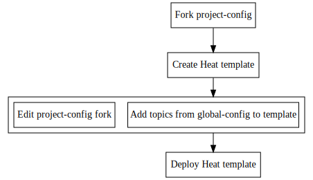

In this section we will describe deployment workflows for two kinds of Puppet configuration approaches: masterless Puppet (for single-instance stacks) and a traditional Puppet master/agent setup (for stacks of two or more instances). Both approaches follow the same basic basic steps:

These workflows assume you are deploying to an Openstack cloud, but they can be adapted to autostrap.standalone if you do not have access to an Openstack cloud.
We will start this section off with a check list of common prerequisites you will need for both approaches. Once you have the items on this list covered you can dive right into deploying your first stack using either the master/agent or masterless approach.
Prerequisites
Following the deployment instructions described in this section requires the following:
- A user account on an Openstack cloud
- The Openstack command-line clients
- git
- A remotely accessible (e.g. through SSH or HTTPS) git repository for storing project specific configuration. This repository should start out as a fork of Autostrap's sample project-config repository. Throughout this section we will refer to this repository with the placeholder my-config and to its url with the placeholder my-config-url.
- An editor with syntax highlighting for YAML (optional, but recommended)
- The syseleven.cloudutils package for smoother handling of heat stacks
(optional, but recommended). A simple
pip install syseleven.cloudutilsshould take care of this.
Puppet Master/Agent Based Configuration
For larger setups a Puppet master can be automatically deployed, with all nodes (including the Puppet master itself) running Puppet agents. This approach is recommended for any setup beyond two nodes. This approach consists of a masterless first stage that sets up the Puppet master and its agent, with configuration being provided through the Puppet master from there on out.
Step 1: Creating a Heat Template
First of all you will need to describe your projects requirements in terms of a Heat template. As a starting point, the Heat project provides some guidelines on writing heat templates.
Autostrap requires various meta data parameters and its own user-data script,
so we recommend you modify one of our example templates in the heat-templates
directory of project-config to fit your project's
requirements.
Adding a AS::autostrap resource
The custom Heat resource AS::autostrap generates a user-data script that
will kick off the autostrap deployment process. This user-data script is then
passed to your instances (OS::Nova::Server resources) as user-data property.
Properties
The following properties of AS::autostrap are most likely to be relevant
to deploying a new project (refer to the AS::autostrap documentation for
the rest):
-
config_repo: The URL of your project specific configuration repository, i.e. my-config-url. -
config_branch: An optional branch/revision of your configuration repository to check out. This is mainly useful for development and best sourced from a Heat parameter that defaults to 'master' (thus allowing you to specify experimental/development branches at run-time, while defaulting to a known-good stable branch otherwise).' -
deploy_key: A SSH private key with access to all non-public repositories you specified in your repository configuration (i.e. all instances ofrepodeploy::reposoccuring in your configuration). We strongly recommend against adding this deploy key to your heat template. Current best practice is to pass it as a parameter (with thehiddenattribute enabled).
Declaration Example
bootstrap:
type: AS::autostrap::v1
properties:
deploy_key: { get_param: deploy_key }
config_repo: <my-config-url>
config_branch:
Instance Attachment Example
my_machine:
type: OS::Nova::Server
properties:
name: my_machine
user_data: { get_attr: [ bootstrap, script ] }
user_data_format: RAW
Note the "::v1" trailing the resource declaration. Like all of Autostrap's custom resources, this resource is versioned: whenever we introduce breaking API changes we increment the version number. This way you can generally rely on a given version continuing to behave as as expected.
Required Metadata parameters for instances
You will need to pass at least the following heat parameters to instances
(OS::Nova::Server resources) to be deployed using Autostrap:
topics- The configuration topics to deploy on the instance in question (see Adding Topics to the Puppet Master).
Additionally, it is recommended to set the following metadata parameters:
-
stack_name- Available to puppet through the factopenstack_stack_name(requires the puppet module openstackfacts) -
floating_ip- Available to puppet through the factopenstack_floating_ip(requires the puppet module openstackfacts)
If you have followed the recommendations above, a regular machine's metadata property might look as follows:
metadata:
stack_name: { get_param: 'OS::stack_name' }
topics: "base ssh puppet-master-agent"
stack_name: { get_param: 'OS::stack_name' }
floating_ip: { get_attr: [ my_port, floating_ip_address ] }
topics: "base ssh puppet-master-agent"
The puppetmaster's metadata property might then look like this:
metadata:
stack_name: { get_param: 'OS::stack_name' }
topics: "base ssh puppet-master-agent"
stack_name: { get_param: 'OS::stack_name' }
floating_ip: { get_attr: [ my_port, floating_ip_address ] }
topics: "base ssh puppet-master-agent"
Step 2: Adding Configuration Topics From global-config
Now you will have to pick configuration topics to deploy from global-config. Each topic consists of a set of puppet classes required to deploy the service or other configuration it deploys, hiera configuration and a list of repositories containing the puppet modules it uses.
At a minimum, you will need the puppet-master topic on the designated puppet
master and the puppet-agent topic on all nodes (including the puppet master).
Additionally, base (sensible configuration and useful packages) and ssh
(sensible sshd configuration and rollout of ssh public keys) are highly
recommended.
Once you have picked topics, edit your heat template and add them to the
topics metadata entry of the instances they are to be deployed on. This
metadata entry is a simple space separated list. If we assume you picked all
topics recommended in the previous paragraph, a machine's meta data would contain
the following entry:
metadata:
topics: "base ssh puppet-master-agent"
Step 3: Adding Topics to the Puppet Master
The configuration topics you picked in the previous section
will be deployed in a masterless fashion upon node initialization. In addition
to these you can and should now pick topics from
global-config to be available through
the puppet master. To this end, simply add their topic names (each on a single
line) to the puppet/topics file in the my-config repository. These
topics' config.d and repos.d subdirectories will be included in the puppet
masters Hiera hierarchy, making the topics' configuration available and causing
its component puppet modules to be checked out on the puppet master. Declaring
these topics' component classes for individual nodes or node types will be up to you
(see the next section).
Step 4: Forking and Customizing project-config
Since you probably want to add custom configuration of your own beyond that provided by global-config, you will now need to fork project-config). This fork is the repository we referred to as my-config in the Prerequisites section above.
Controlling access to my-config
my-config must be reachable from the Internet, so your Openstack instances can use it to retrieve your projects's configuration. It can be reachable through a public HTTPS URL, but we strongly recommend to make it accessible through SSH with public-key authentication.
If you do make my-config non-public you will have to supply a
deploy_key property to your
AS::autostrap resource. This property must contain a SSH private key that
can access my-config.
Customizing my-config
Now you can modify my-config to your heart's content. The changes and additions will then be deployed on your heat stack's machines. You can put Hiera configuration into the following subdirectories of my-config:
-
puppet/hieradata/config.d: This directory contains hiera configuration relevant to all nodes/node types. It should contain all configuration that is not confined to any specific node or node type. One example for such a configuration value would be the list of SSH authorized keys, configured in thessh::keyshash. File and directory names in this directory are free-form (every file with a .yaml extension will be included), but it is recommended to organize configuration by topic name for easier navigation by developers. -
puppet/hieradata/repos.d: This directory contains puppet-repodeploy configuration, i.e. zero or more instances of therepodeploy::reposhash. This hash specifies repositories to be checked out by puppet-repodeploy. File and directory names in this directory are free-form (every file with a .yaml extension will be included), but it is recommended to organize configuration by topic name for easier navigation by developers. -
puppet/hieradata/nodes.d: This directory contains node specific configuration. It should only contain configuration that is relevant to specific nodes. All file names in this directory must be the target node's FQDN plus a '.yaml' extension, e.g.puppetmaster.local.yaml. All nodes start out with a FQDN of 'hostname'.local. Theclassesarray holding the classes to be deployed on a given node should be defined here. -
puppet/hieradata/nodetypes.d: This directory contains node type specific configuration. A node's node type (such asappserver) is assigned by setting thenodetypemetadata entry. All file names in this directory must be the target node type's name as given in thenodetypemetadata entry, plus a '.yaml' extension, e.g.appserver.yaml. Theclassesarray holding the classes to be deployed on a given node type should be defined here.
Refer to the example project-config repository's README.md file file for more detailed information on these directories and their contents.
Configuring classes to be deployed on nodes and node types
All classes to be included in the puppet master's catalog should be declared
either on a per-node or a per-nodetype basis, i.e. in
puppet/hieradata/nodes.d or puppet/hieradata/nodetypes.d, respectively. If
you wish to deploy one or more of the ready-made topics from global-config,
for a given node or node type you will need to do two things:
-
Ensure the topics' configuration and component puppet modules are available on the puppet master (see Adding Topics to the Puppet Master).
-
Add the topics' classes to your nodes' and/or nodetypes' classes arrays.
For the latter step you can use the merge_classes script from the
autostrap-utils repository.
This script will gather multiple topics' classes arrays from global-config
and merge them into a classes array ready for inclusion in a configuration file
in nodes.d or nodetypes.d. The following example generates a classes array
containing the nginx-server, and puppet-agent topics:
git clone https://github.com/autostrap/global-config.git /tmp/global-config
merge_classes --classes-dir /tmp/global-config/puppet/hieradata/classes.d \
nginx-server puppet-agent
This would yield the following classes array, which also happens to be a valid node/node type configuration:
classes:
- "nginx"
- "autopuppet::role::agent"
To include it in an existing node configuration you would have to remove the
--- in the first line, since leaving it in place would indicate the begin of
a new YAML document.
Step 5: Deploying From Your Heat Template
Once configuration is finished and pushed to the my-config repository and your heat template contains the neccessary elements you can deploy a heat stack roughly as follows
heat stack-create -f mycloud.yaml \
-P key_name=<nova key name> \
-P deploy_key="$(cat ~/.ssh/deploy_key)" \
my-master-agent-stack
Substitute the key name you specified when uploading your SSH key to nova for
<nova key name>. You may also have to supply a public_net_id parameter.
Other parameters supplied to heat stack-create may vary. This example assumes a
largely unmodified copy of the sensu-master-agent.yaml example template with
just the config_repo parameter's default changed to my-config-url.
Masterless Puppet Configuration
This approach is meant for small setups that typically consist of only one or two servers. In this case a Puppet master is not really needed. Consequently, all configuration and Puppet modules relevant to the node in question will be locally available on any node. A cronjob will run puppet locally on a regular basis. The diagram below gives an overview of the steps involved in a masterless puppet setup:
Step 1: Creating a Heat Template
First of all you will need to describe your projects requirements in terms of a Heat template. As a starting point, the Heat project provides some guidelines on writing heat templates.
Autostrap requires various meta data parameters and an Autostrap provided user-data script, so we recommend you modify one of our example templates in the heat-templates directory of project-config to fit your project's requirements.
Adding a AS::autostrap resource
The custom Heat resource AS::autostrap generates a user-data script that
will kick off the autostrap deployment process. This user-data script is then
passed to your instances (OS::Nova::Server resources) as user-data property.
Properties
The following properties of AS::autostrap are most likely to be relevant
to deploying a new project (refer to the AS::autostrap documentation for
the rest):
-
config_repo: The URL of your project specific configuration repository, i.e. my-config-url. -
config_branch: An optional branch/revision of your configuration repository to check out. This is mainly useful for development and best sourced from a Heat parameter that defaults to 'master' (thus allowing you to specify experimental/development branches at run-time, while defaulting to a known-good stable branch otherwise).' -
deploy_key: A SSH private key with access to all non-public repositories you specified in your repository configuration (i.e. all instances ofrepodeploy::reposoccuring in your configuration). We strongly recommend against adding this deploy key to your heat template. Current best practice is to pass it as a parameter (with thehiddenattribute enabled).
Declaration Example
bootstrap:
type: AS::autostrap::v1
properties:
deploy_key: { get_param: deploy_key }
config_repo: <my-config-url>
config_branch:
Instance Attachment Example
my_machine:
type: OS::Nova::Server
properties:
name: my_machine
user_data: { get_attr: [ bootstrap, script ] }
user_data_format: RAW
Note the "::v1" trailing the resource declaration. Like all of Autostrap's custom resources, this resource is versioned: whenever we introduce breaking API changes we increment the version number. This way you can generally rely on a given version continuing to behave as as expected.
Required Metadata parameters for instances
You will need to pass at least the following heat parameters to instances
(OS::Nova::Server resources) to be deployed using Autostrap:
topics- The configuration topics to deploy on the instance in question (see Adding Configuration Topics from global-config).
Additionally, it is recommended to set the following metadata parameters:
-
stack_name- Available to puppet through the factopenstack_stack_name(requires the puppet module openstackfacts) -
floating_ip- Available to puppet through the factopenstack_floating_ip(requires the puppet module openstackfacts)
If you have followed the recommendations above, a machine's metadata property might look as follows:
metadata:
stack_name: { get_param: 'OS::stack_name' }
topics: "base ssh puppet-masterless"
stack_name: { get_param: 'OS::stack_name' }
floating_ip: { get_attr: [ my_port, floating_ip_address ] }
topics: "base ssh puppet-masterless"
Step 2: Adding Configuration Topics From global-config
Now you will have to pick configuration topics to deploy from global-config. Each topic consists of a set of puppet classes required to deploy the service or other configuration it deploys, hiera configuration and a list of repositories containing the puppet modules it uses.
At a minimum, you will need the puppet-masterless topic. Additionally,
base (sensible configuration and useful packages) and ssh (sensible sshd
configuration and rollout of ssh authorized keys) are highly recommended.
Once you have picked topics, edit your heat template and add them to the
topics metadata entry of the instances they are to be deployed on. This
metadata entry is a simple space separated list. If we assume you picked all
topics recommended in the previous paragraph, a machine's meta data would contain
the following entry:
metadata:
topics: "base ssh puppet-masterless"
Step 3: Forking and Customizing project-config
Since you probably want to add custom configuration of your own beyond that provided by global-config, you will now need to fork project-config. This fork is the repository we referred to as my-config in the Prerequisites section above.
Controlling access to my-config
my-config must be reachable from the Internet, so your Openstack instances can use it to retrieve your projects's configuration. It can be reachable through a public HTTPS URL, but we strongly recommend to make it accessible through SSH with public-key authentication.
If you do make my-config non-public you will have to supply a
deploy_key property to your
As::autostrap resource. This property must contain a SSH private key that
can access my-config.
Customizing my-config
Now you can modify my-config to your heart's content. The changes and additions will then be deployed on your heat stack's machines. You can put Hiera configuration into the following subdirectories of my-config:
-
puppet/hieradata/config.d: This directory contains hiera configuration relevant to all nodes/node types. It should contain all configuration that is not confined to any specific node or node type. One example for such a configuration value would be the list of SSH authorized keys, configured in thessh::keyshash. File and directory names in this directory are free-form (every file with a .yaml extension will be included), but it is recommended to organize configuration by topic name for easier navigation by developers. -
puppet/hieradata/repos.d: This directory contains puppet-repodeploy configuration, i.e. zero or more instances of therepodeploy::reposhash. This hash specifies repositories to be checked out by puppet-repodeploy. File and directory names in this directory are free-form (every file with a .yaml extension will be included), but it is recommended to organize configuration by topic name for easier navigation by developers. -
puppet/hieradata/nodes.d: This directory contains node specific configuration. It should only contain configuration that is relevant to specific nodes. All file names in this directory must be the target node's FQDN plus a '.yaml' extension, e.g.puppetmaster.local.yaml. All nodes start out with a FQDN of 'hostname'.local. -
puppet/hieradata/nodetypes.d: This directory contains node type specific configuration. A node's node type (such asappserver) is assigned by setting thenodetypemetadata entry. All file names in this directory must be the target node type's name as given in thenodetypemetadata entry, plus a '.yaml' extension, e.g.appserver.yaml.
All classes to be included in puppet's catalog should be declared either on a
per-node or a per-nodetype basis, unless they are part of a topic from the
topics metadata entry already, of course. This means adding a classes array
to a file in puppet/hieradata/nodes.d and/or puppet/hieradata/nodetypes.d.
Refer to the example project-config repository's README.md file file for more detailed information on these directories and their contents.
Last but not least, you can add last-minute commands to be run at the end of the
bootstrapping process to bootstrap.d/additional. This is the place for
everything that cannot be handled using puppet. This script will run on all
nodes using my-config as its project configuration repository.
Configuring my-config in your Heat template
As a final step, you will need to make the Heat stack you are creating aware of
your my-config repository. To this end, simply pass my-config-url as
config_repo property to
your AS::autostrap resource.
Step 5: Deploying From Your Heat Template
Once configuration is finished and pushed to the my-config repository and your heat template contains the neccessary elements you can deploy a heat stack roughly as follows:
heat stack-create -f mycloud.yaml \
-P key_name=<nova key name> \
-P deploy_key="$(cat ~/.ssh/deploy_key)" \
my-masterless-stack
Substitute the key name you specified when uploading your SSH key to nova for
<nova key name>. You may also have to supply a public_net_id parameter.
Other parameters supplied to heat stack-create may vary. This example assumes a
largely unmodified copy of the nginx-masterless.yaml example template with
just the config_repo parameter's default changed to my-config-url.